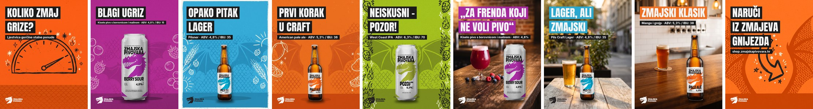
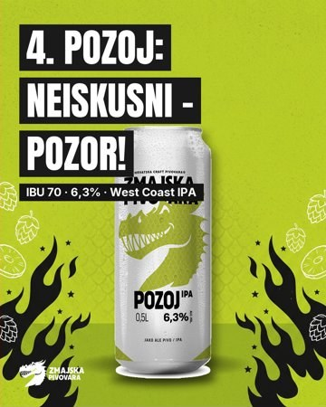
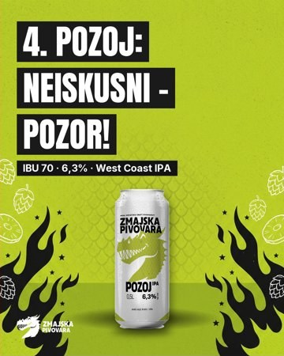
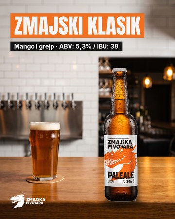
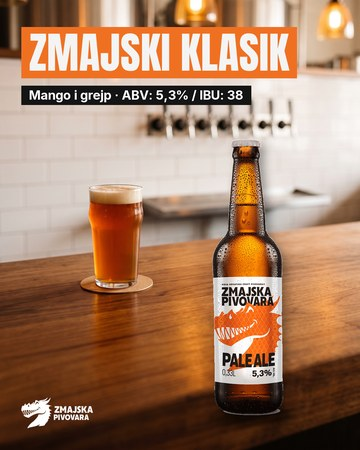

Recept je ponovljiv postupak u šest odvojenih faza. Iz brifa, screenshotova postojećih objava, službenog weba i fotografija proizvoda nastaju tri objave spremne za Instagram: slike 1080×1350, opisi s hashtagovima, format, cilj i obrazloženje. Svaka faza sprema međurezultat (JSON), pa se rad može pregledati, ručno ispraviti i nastaviti od bilo koje faze. Pokreće se iz web sučelja (FastAPI + Vue) ili iz naredbenog retka (CLI). Oba koriste istu jezgru u Pythonu.
cp .env.example .env # upisati ANTHROPIC_API_KEY i GEMINI_API_KEY (primjer je bez ključeva) docker compose build api && docker compose up -d # sučelje: http://localhost:5175, API: :8001/docs docker compose run --rm cli new inputs/zmajska/brief.yaml --stop-after plan # stane nakon plana docker compose run --rm cli resume <id> [--from plan --note "Više humora"] # nastavak / ponavljanje faze docker compose run --rm cli recompose <id> # ponovno složi slajdove iz postojećih pozadina (bez troška)
Sve radi u Dockeru (Python 3.14, Node 26). Testovi: docker compose --profile test run --rm pytest
(31 test, lažni AI klijenti, bez troška) i Vitest (12). GitHub Actions ih pokreće na svakom pushu.
| Faza | AI | Što radi | Međurezultat |
|---|---|---|---|
| 1. Brif | – | Provjera ulaza (proizvodi, logo, screenshotovi, opisi); čitanje službenog weba i webshopa (8 stranica). | 01_brief.json |
| 2. Analiza | Claude Opus 5.5 | Ton, pravila pisanja, boje (hex), foto i grafički stil, proizvodi. Provjerene činjenice s izvorom odvojene od pretpostavki (45 činjenica s weba). | 02_analysis.json |
| 3. Plan | Claude | Tri objave s različitim ciljem: format, koncept, obrazloženje, tekstovi slajdova, opis, hashtagovi, opis scene. Ovdje čovjek pregledava i uređuje. | 03_plan.json (+ 03_plan.ai.json) |
| 4. Izrada | Gemini (slika) | AI generira samo pozadinu. Prava fotografija proizvoda, pravi logo i naslov slažu se preko nje (Pillow). | images/, 04_create.json |
| 5. Provjera | Claude (vizualno) | Ocjena svakog slajda i opisa. Loši slajdovi se ponovno generiraju s ispravkom (do 2×), zadržava se najbolji pokušaj. | 05_review.json |
| 6. Isporuka | – | Mapa po objavi (slike + caption.txt), sažetak s ciljem i obrazloženjem, ZIP sa svim fazama. | final/, ZIP |

1 „Koliko zmaj grize?“ – karusel od 5 slajdova, edukacija o gorčini (IBU), cilj spremanje ·
2 „Za frenda koji ne voli pivo“ – jedna slika, cilj komentari i tagiranje ·
3 „Lager, ali zmajski“ – karusel od 3 slajda, cilj kupnja u webshopu. Opisi, ciljevi i obrazloženja su u final/README.md.
Claude kao art direktor dobiva referentne fotografije proizvoda, logo, gotove slajdove, provjerene činjenice i tekst s weba. Za svaki slajd vraća ocjenu 1–10 i četiri provjere: točan proizvod (bez lažnih limenki i natpisa u pozadini), prirodno (stoji li proizvod uvjerljivo na podlozi), u skladu s brendom i čitljiv tekst. Slajd koji padne (ocjena ispod 7 ili neka provjera netočna), a problem je u pozadini, ponovno se generira s konkretnim ispravkom scene. Zadržava se najbolje ocijenjen pokušaj. Opis se provjerava na izmišljene tvrdnje, cijene, zdravstvene tvrdnje i ton.
Uz to: automatski testovi cijelog toka s lažnim AI klijentima (31 + 12), testovi slaganja slika i ručni pregled svakog pokretanja u sučelju. QA je uhvatio i greške u mom kodu: naslov je prekrivao proizvod, podnaslov je bio odrezan, a emoji su se iscrtavali kao kvadratić. Popravljene su u slaganju, bez novih slika.




Naslov, objava 2. AI: „TAGIRAJ ONOG KOJI ‚NE VOLI PIVO'“ → čovjek: „ZA FRENDA KOJI NE VOLI PIVO“. Razlog: predugo za sliku. Kraći naslov je čitljiviji, a poziv na tagiranje je ionako u opisu.
Opis, objava 1. AI: „kiselo pivo … Kiselost dolazi od prirodnih bakterija“ → čovjek: „blago kiselkasto pivo … Blaga kiselost dolazi od prirodnih bakterija“. Razlog: „kiselo“ i „bakterije“ odbijaju nekoga tko ne poznaje sour stil.
Što se dogodilo poslije: provjera je upozorila da web piše „karakteristična kiselost“, a ne „blaga“, pa ublažavanje nije
potkrijepljeno. U prvoj verziji provjera je izmjenu potiho vratila. To sam promijenio: ručno uređen tekst se ne prepisuje,
primjedba i prijedlog ostaju vidljivi (sučelje, 05_review.json), a odluku donosi čovjek. Izmjena se radi u sučelju (faza Plan),
original AI plana se sprema kao 03_plan.ai.json, a slajdovi se ponovno slože bez novih slika.